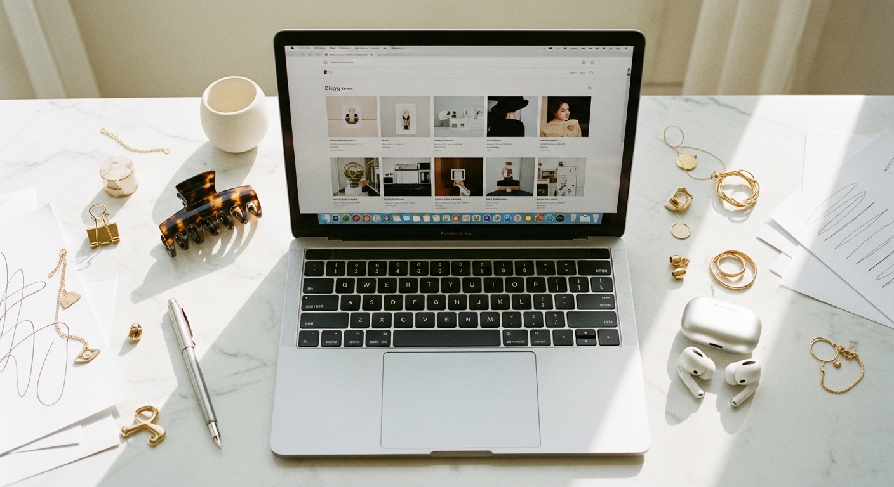

website template for blog

HOW TO CHOOSE A WEBSITE TEMPLATE FOR BLOG CONTENT THAT ACTUALLY CONVERTS
You have been writing content for months. Maybe years. You post consistently, you share what you know, and you genuinely help people with your expertise.
But your blog still lives on a platform you do not control. Or it is buried inside a website that looks like it was built in 2015. Or worse - you do not have one at all, and all that valuable content disappears into the social media void 48 hours after you post it.
Here is the thing most people miss: a website template for blog content is not just about looking pretty - it is about giving your words a permanent home that works for your business 24/7.
The right template turns casual readers into email subscribers. Subscribers into clients. Clients into people who tell everyone they know about you.
The wrong template? It buries your content, confuses your visitors, and makes you look less credible than you actually are.
Let me walk you through exactly what to look for - and what to avoid.
WHY YOUR BLOG NEEDS ITS OWN HOME
Social media posts disappear. Instagram stories vanish in 24 hours. Even your best carousel gets buried under the algorithm within a week.
But a blog post on your own website? That lives forever. It can rank on Google for years. It can bring you traffic while you sleep, while you are on holiday, while you are focused on other parts of your business.
What happens to all that content you create if you do not have a place to store it?
I learned this the hard way. For the first two years of my business, I poured everything into Etsy and Instagram. Then one month, reach dropped significantly and I had no backup. No way to reach my audience directly. No owned platform where my content could continue working for me.
Your website is the only place online you truly own. The algorithm cannot take it away. A platform policy change cannot wipe out your archive. Your blog becomes an asset that compounds over time - but only if it is set up properly.
WHAT MAKES A GOOD WEBSITE TEMPLATE FOR BLOG CONTENT
Not all templates are built for blogging. Some look beautiful on the homepage but completely fall apart once you start adding posts. Others have blog functionality technically available but treat it like an afterthought.
Here is what to look for:
- Clean reading experience - your words should be the focus, not competing with cluttered sidebars or distracting design elements
- Easy navigation between posts - readers should be able to find related content without hunting for it
- Mobile-first design - most of your readers will find you on their phone, and if the text is tiny or the layout breaks, they leave
- Fast loading speed - every second of delay costs you readers and hurts your Google ranking
- Built-in email capture - the whole point is turning readers into subscribers you can reach directly
The best website template for blog content does not just display your posts - it guides readers toward a next step.
That next step might be joining your email list. Reading another post. Booking a call. Buying a product. But there should always be a clear path forward, not a dead end.
THE MISTAKE MOST BLOGGERS MAKE WITH TEMPLATES
Here is what I see constantly: someone picks a template because it looks stunning in the demo. Gorgeous fonts, beautiful images, that sleek minimal aesthetic.
Then they try to add their actual content and everything falls apart.
The demo had three carefully curated blog posts with professional photography. Your blog has 47 posts with varying image quality and titles of different lengths. Suddenly that "minimal" template looks chaotic and inconsistent.
Does the template still look good with real content - not just the perfectly staged demo?
Always test with your actual content before committing. Add a few real posts. Use your real images. Write your real headlines. See how it holds up when it is not being styled by a professional design team.
The templates that work best in the real world are the ones designed with flexibility built in. They account for the fact that your content will vary. Your images will not all be the same dimensions. Your titles will not all be the same length.
If you want a done-for-you option that is already built with this flexibility in mind, the [Switzertemplates Wix websites](https://switzertemplates.com) are designed specifically for coaches and service providers who need their content to look professional without fighting the template every time they publish.
FEATURES THAT ACTUALLY MATTER (AND ONES THAT DO NOT)
Let me save you some time. Here is what matters for a blog-focused website template:
Features worth paying attention to:
- Category and tag organization - so readers can find related posts easily
- Author bio section - builds trust and connection with your audience
- Social sharing buttons - makes it easy for readers to spread your content
- Related posts suggestions - keeps people on your site longer
- Search functionality - essential once you have more than 20 posts
- RSS feed support - for readers who use feed readers (yes, they still exist)
Features that sound impressive but rarely matter:
- Fancy animation effects - they slow your site down and distract from your content
- Multiple layout options you will never use - you need one good layout, not fifteen mediocre ones
- Complex mega-menus - most blogs do better with simple, clear navigation
- Built-in commenting systems - most bloggers end up turning these off anyway due to spam
Focus on what makes your content easier to read and act on - not what makes the template listing look more impressive.
HOW TO EVALUATE A TEMPLATE BEFORE YOU BUY
Before you commit to any website template for blog purposes, run through this checklist:
Does the blog section get as much design attention as the homepage?
Many templates treat the blog as secondary. The homepage looks polished, the about page looks decent, but the actual blog posts feel like an afterthought. Open the demo blog post and really look at it. Is the typography readable? Is there enough white space? Does it feel like somewhere you would want to spend time reading?
How does it handle featured images?
Some templates require specific image dimensions or your photos get cropped awkwardly. Others stretch images in ways that look unprofessional. Check what happens when you add images that are not perfectly sized.
What does the mobile version actually look like?
Do not just trust the "mobile responsive" label. Open the demo on your phone. Scroll through a blog post. Try to click the navigation. Try to sign up for the email list. If anything feels clunky, your readers will notice - and leave.
Is the template regularly updated?
Web standards change. Browser requirements evolve. A template that was last updated two years ago might have compatibility issues you will not notice until something breaks. Check when the last update was.
MATCHING YOUR TEMPLATE TO YOUR CONTENT STRATEGY
Different types of blogs need different template approaches.
If you publish long-form educational content: You need excellent typography, generous line spacing, and a reading experience that does not exhaust your audience. Look for templates designed for readability, not visual impact.
If your content is image-heavy: Photography blogs, food blogs, travel blogs - you need templates where images are the star. Grid layouts, gallery features, and full-width image support matter more than fancy text styling.
If you monetize through products or services: Your template needs clear pathways from blog content to your offers. Built-in CTA sections, easy product integration, and strategic placement for opt-in forms.
If you want to build an email list: (And you should.) Make sure email capture is prominent without being obnoxious. A template with built-in newsletter signup in the header, footer, and within posts gives you multiple opportunities to convert readers.
For service providers and coaches who want a complete setup - website, branding, and landing pages that all work together - the [3-in-1 bundle from Switzertemplates](https://switzertemplates.com) includes everything you need to look professional across every platform. The Wix website template is specifically designed for blog content that converts readers into clients.
THE REAL COST OF A CHEAP TEMPLATE
Free templates exist. Extremely cheap templates exist. And sometimes they are genuinely fine.
But often, you pay for them in other ways:
- Hours spent fighting with customization that does not work the way you expected
- Limited support when something breaks
- Outdated code that hurts your search rankings
- A design that looks exactly like thousands of other websites
- Missing features you do not realize you need until you have already built everything
What is your time actually worth?
I have talked to so many business owners who spent weeks trying to make a cheap template work, then finally gave up and bought something better - essentially paying twice. Once in money, once in wasted time.
A good template is an investment in your business infrastructure. It is not the place to cut corners if you are serious about your content actually working for you.
WHAT TO DO AFTER YOU CHOOSE YOUR TEMPLATE
Picking the right website template for blog content is step one. Here is what comes next:
Set up your categories strategically. Think about what your readers are actually searching for, not just how you organize things in your head. Use language they would use.
Create a consistent posting format. Every post should have a featured image, a clear headline, and a call to action. Decide on this structure once and stick to it.
Build your email capture into the system. Not as an afterthought - as a core part of your blog strategy. Every post should have at least one opportunity for readers to join your list.
Connect to Pinterest. Blog content and Pinterest work incredibly well together. Your posts can drive traffic from Pinterest for years after you publish them. Make sure your template supports rich pins and has share-friendly images.
Publish consistently. The template is the foundation. The content you put on it is what actually builds your business. One post per week, consistently, beats sporadic bursts of activity every time.
YOUR BLOG DESERVES BETTER THAN A SOCIAL MEDIA FEED
Your expertise is worth more than disappearing into an algorithm. Every piece of content you create should be building something - an archive, an authority, an asset that brings people to your business month after month.
The right website template for blog content makes this possible. It gives your words a permanent home. It makes your business look as professional as the work you actually do. And it turns readers into the clients and customers who keep your business growing.
Stop letting your best content vanish. Give it a home that works as hard as you do.
If you are ready to set up a website that actually supports your blog and your business, browse the [Switzertemplates Etsy shop](https://www.etsy.com/shop/switzertemplates) for Wix website templates designed specifically for coaches, consultants, and service providers. Over 27,700 sales and 2,800+ reviews from business owners who needed their online presence to match their expertise. 📥
Let me know in the comments below if you want me to cover any branding or marketing topics in more depth, and I'll make sure to create a blog post about it in the future.